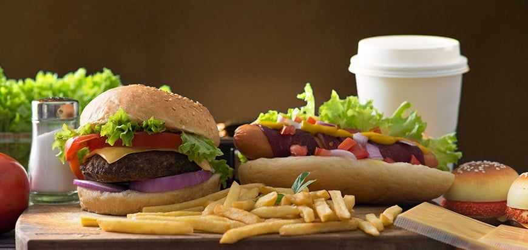

12.05.2017

It was a little strange to get the new summer-themed Chick-fil-A Smokehouse BBQ Bacon Sandwich on the day of an unseasonable May snowstorm in Salt Lake City, but fortunately deliciousness knows no season. From top to bottom, the sandwich consists of a Hawaiian bun, honey smokehouse BBQ sauce, bacon with a brown sugar pepper blend, Colby-Jack cheese, grilled chicken, lettuce, and bun.
How to cook the perfect steak
12.05.2017How do you like to eat your steak? For some it's nice and simple, with potatoes of some form and a side of sauce, maybe some green vegetables, or perhaps you prefer to throw some Asian flavours into the mix? However you like it, you can never have too many steak recipes. Here then are five steak recipes from Gordon Ramsay, from sauced dishes to sandwiches. You're sure to find something you like in amongst these.